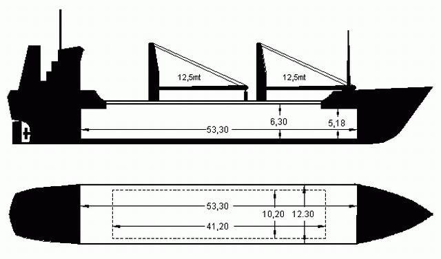
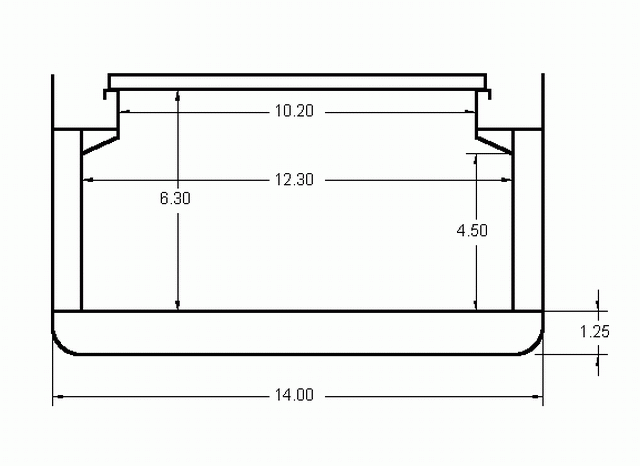
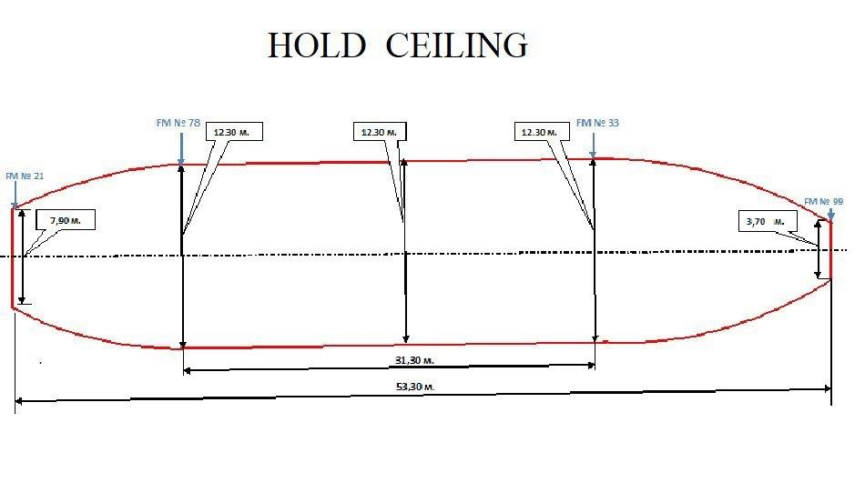

Cargo vessel Suzie-Q
Owner
AMAZON SHIPPING B.V.
Oudegracht 168 1811CP Alkmaar
The Netherlands
Post address
Amazon Shipping BV
c/o Jan Wind Shipping
Zuideinde 49 1843JM Grootschermer
The Netherlands
Contacts
management@suzie-q.nl
jan@wind.nl
+7 (921) 944-8257
+31 6 21-39-3631
Operator
AMAZON SHIPPING Ltd
9 St. Mary’s Street
St. John’s Antigua and Barbuda
Cargo broker
BLUE MARLIN CHARTERING N.V.
bluemarlin.net
Technical specifications
Certificates
Technical specifications
TYPE:
General cargo / Singledecker
1 hold / 1 hatch
2 cranes x 12.5 tons
FLAG:
Antigua flag
CLASS:
Bureau Veritas
P&I:
NNPC Haren, The Netherlands
BUILDERS:
Bijlholt, Holland 1983
REGISTER TONNAGE:
GT 1980
NT 1028
DIMENSIONS:
Length over all 81.70 mtr Beam 14.20 mtr Moulded depth 6.45 mtr
DEADWEIGHT CAPACITIES:
Summer draft: 5.38 mtr salt DWT 3009.7 mt
Tropical draft: 5.48 mtr salt DWT 3109.7 mt
Winter draft: 5.26 mtr salt DWT 2910.1 mt
CONTAINER CAPACITIES:
95 TEUS
CARGO HOLD:
1 unobstructed hold 53,30 x 12,30 mtr
Partly doubleskinned – narrowing fore and after
(see drawings)
Bale capacity 128 799 cbft
Grain capacity 133 815 cbft
Fully grainfitted
1 McGregor hatch 41.20 x 10.20 mtr
CRANES:
2 hydraulic cranes of 12,5 tons each (Starboard)
DECK STRENGTH:
Tanktop 6,0 ts per sqm Hatchcovers 1,5 ts per sqm
SPEED & CONSUMPTION:
Abt 10,5 knots on 5.5 tons MGO
MAIN ENGINE:
Type - Caterpillar 3606 Max power - 1182 kWt
TANK CAPACITIES:
Fuel 245 cbm Fresh water 32 cbm Ballast water 1010 cbm
  
Certificates
Certificate of Bareboat Charter Registry
Certificate of Classification
Cargo Ship Safety Construction Certificate
Cargo Ship Safety Equipment Certificate
Cargo Ship Safety Radio Certificate
International Tonnage Certificate
International Load Line Certificate
International Oil Pollution Prevention Certificate
Minimum Safe Manning Document
International Ship Security Certificate
ISM Document of Compliance
ISM Safety Management Certificate
Maritime Labor Certificate
Attestation of Cargo Gear Survey
P&I Insurance NNPC
Hull & Machinery Insurance NNAM
International Ballast Water Management Certificate
International Air Pollution Prevention Certificate
International Sewage Pollution Prevention Certificate
International Energy Efficiency Certificate